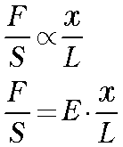
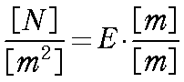

さて，弾性率のページでフックの法則について述べました．
バネというと，我々はらせん状したものを想像します．
確かに，このような形状のバネがいっぱい存在しますね．
後は，板バネ，などでしょうか？
このときの弾性率は，このバネの形状，巻き数，太さ，などで決まります．
つまり．．．言い換えると，同じ素材でも形状によってバネ定数は変化します．
では，形状によらない素材そのもののバネの性質はどのように表せばよいでしょう？
ここで，長さ，L，断面積，S，の素材を考えましょう．
ここに力，F，を加えると，ｘの変位が起きるとしましょう．
この変位，ｘの大きさは先ほどのパラメータとどう関係するでしょう？
直感的に，
長さ，L，力，Fに比例
断面積，S，に反比例
することがわかると思います．
式に書くと，

となります．
ここで，式を変形して，比例定数をもうけると，

となります．この比例定数，E，をヤング率，と呼びます．
ヤング率の次元は，

となりますので，[N/m2]となります．
これって，圧力の次元と同じですね．
このヤング率は素材そのものの性質で，その形状には依存しません．